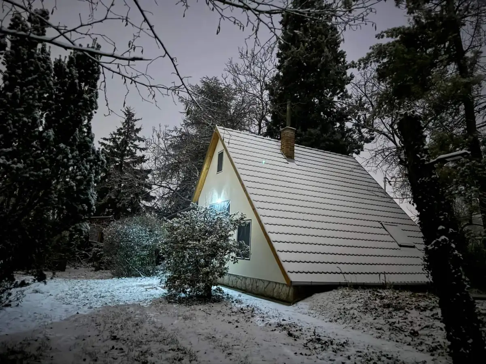
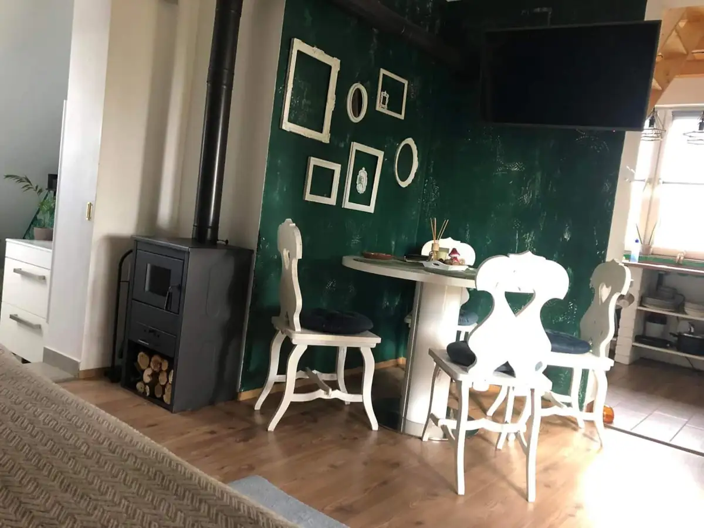
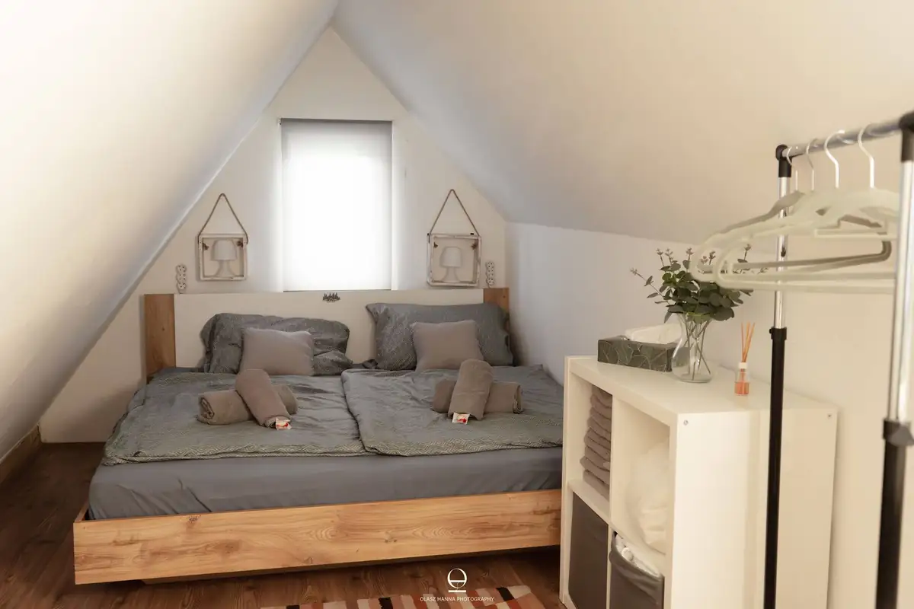
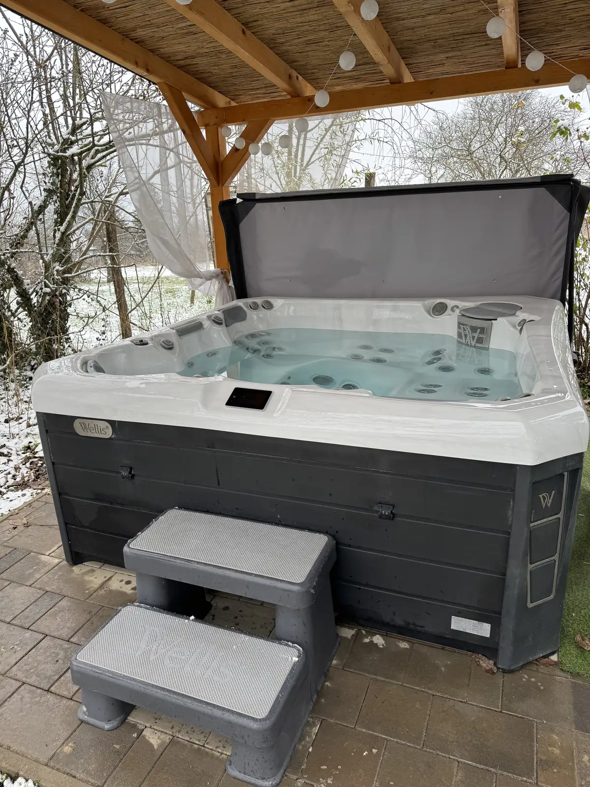
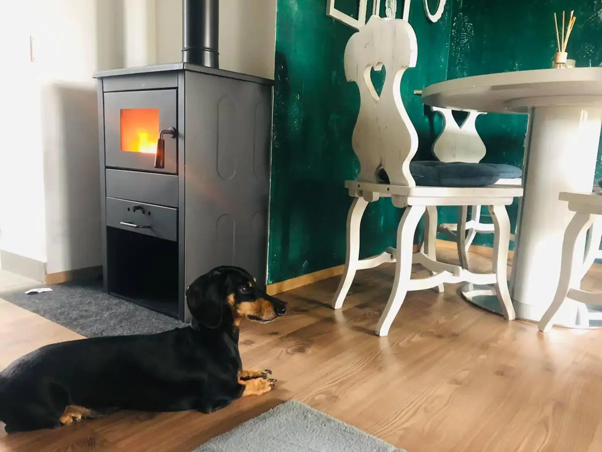

A ház Hatvanöt négyzetméter, két hálószoba, körben fenyők
A teljes házat egyben kapod meg: nappali kihúzható kanapéval, külön konyha, étkező, két hálószoba, fürdőszoba és fedett terasz. Gyódon vagy, Pécstől 5 km-re.
- Alapterület
- 65 m²
- Vendégek
- legfeljebb 8 fő
- Hálószoba
- 2
- Fürdőszoba
- 1
- Kert
- 1400 m²
- Parkoló
- 4 zárt, ingyenes

Terek
Nappali, konyha és étkező, két hálószoba és egy fürdőszoba.

Nappali
Kihúzható kanapé, klíma, Wi-Fi és Netflix.

Konyha
Külön konyha, hogy a főzés ne a nappaliban legyen.

Étkező
Kerek asztal a zöld fal előtt, a közös vacsorákhoz.

Hálószoba a tetőtérben
Franciaágy a ferde mennyezet alatt.

Második hálószoba
A két hálószoba és a nappali együtt legfeljebb 8 vendégnek ad helyet.

Fürdőszoba
Egy fürdőszoba, zöld mintás fallal és zuhanyzóval.
Jakuzzi, szauna, kandalló
Mindhárom csak a tiéd, a házzal együtt jár. A jakuzzi egész évben, éjjel-nappal használható.

Privát jakuzzi
Legfeljebb 6 főnek, nyáron és télen, nonstop.

Finn szauna
Fából épült, az ablakán át a kertet látod.

Kandalló
Fa ég benne, a kutya is szereti.
Felszereltség
Amit a hirdetéseinkben is felsorolunk, egy helyen.
Pihenés
- Privát jakuzzi
- Finn szauna
- Kandalló
- Klíma
- Netflix
- Wi-Fi
Bent
- Nappali kihúzható kanapéval
- Külön konyha
- Étkező
- Két hálószoba
- Egy fürdőszoba
Kint
- Fedett, privát terasz
- 1400 m² saját kert
- Bogrács, sütögetés
- 4 zárt, ingyenes parkoló
Játék
- Ping-pong
- Csocsó
- Hinta kilátással
Házirend röviden
Önállóan jutsz be, a kulcs a kulcsdobozban vár. Az idegenforgalmi adó benne van az árban.
- Kisállat
- Kutya és macska is jöhet.
- Baba, gyerek
- A ház baba- és gyerekbarát.
- SZÉP-kártya
- OTP, K&H, MBH és MKB kártyát elfogadunk.
- Bejutás
- Önállóan, kulcsdobozzal.
- Idegenforgalmi adó
- Benne van az árban.
- NTAK-szám
- MA25107793

A környék
Gyód Pécstől 5 km-re fekszik, a ház domboldaláról a Mecsekre látsz. Fél kilométerre horgászhatsz, egy kilométerre túrázhatsz.
- 500 mhorgászás
- 1 kmtúrázás
- 5 kmPécs
- 10 kmuszoda és bowling
- 15 kmbobozás